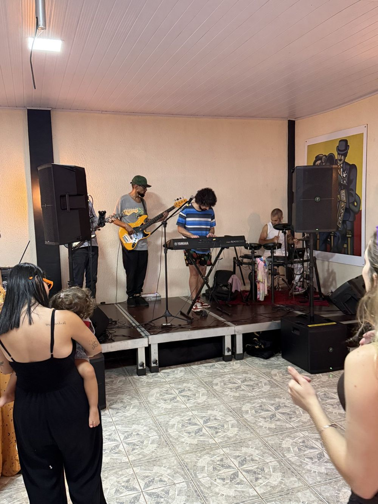
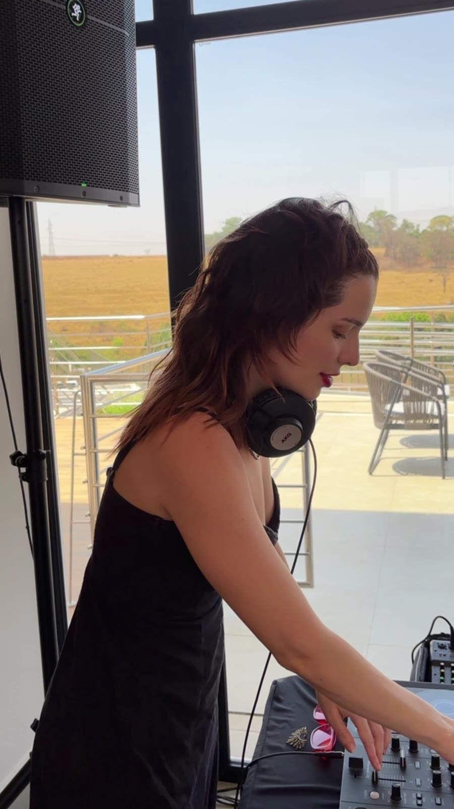
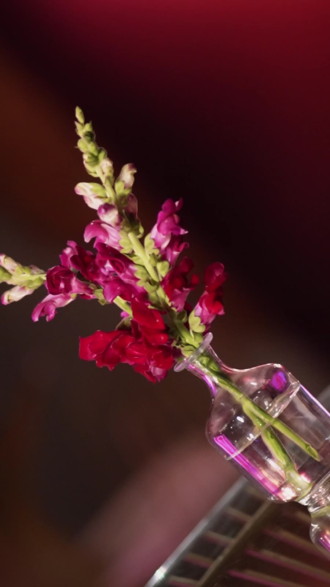

Sonorização e iluminação para eventos que não permitem improviso.
Uma estrutura técnica preparada para que cada detalhe seja percebido como deveria: com clareza, equilíbrio e atmosfera.
Falar com a Marsalla SoundNosso métodoUm evento precisa de mais do que bons equipamentos.
Precisa de planejamento, dimensionamento e controle para que tudo aconteça como foi pensado.
Um sistema de som não deve apenas produzir volume. Deve proporcionar clareza, equilíbrio e cobertura adequada.
A iluminação não deve apenas iluminar um ambiente. Deve valorizar os espaços, acompanhar os momentos e contribuir para a atmosfera que os anfitriões desejam construir.
A diferença não está apenas nos equipamentos utilizados. Está na forma como toda a estrutura é planejada e conduzida.

O som transmite. A iluminação transforma.
A estrutura sustenta a experiência.
Na Marsalla, pensamos além da instalação de equipamentos. Cada evento possui características próprias, e nossa proposta é construir uma estrutura técnica coerente com o espaço, o público e a experiência desejada.
O resultado precisa fazer sentido como um todo. Desde a inteligibilidade de uma fala até a presença da música e a atmosfera criada pela iluminação.
Porque uma boa estrutura técnica não deve disputar atenção com o evento. Deve contribuir para que ele aconteça.
Tranquilidade técnica não acontece por acaso.
Cada evento passa por etapas de planejamento e preparação:
- 01
Entendimento das necessidades do evento.
- 02
Análise do espaço e das condições técnicas.
- 03
Dimensionamento da estrutura de sonorização.
- 04
Planejamento da iluminação.
- 05
Preparação e organização dos equipamentos.
- 06
Montagem, testes e ajustes.
- 07
Acompanhamento e operação durante o evento, conforme a contratação.
Cada etapa existe para reduzir imprevistos e garantir que a estrutura esteja preparada antes da chegada dos convidados.
Cada evento exige uma estrutura própria.
Não existe uma configuração única que atenda bem a todos os eventos. O dimensionamento depende do espaço, da quantidade de convidados, da programação e das necessidades de cada ambiente.
Por isso, a Marsalla trabalha com soluções que podem contemplar:
Sonorização
- Sistemas de sonorização para cerimônias e recepções.
- Estruturas de som para apresentações musicais.
- Sonorização para DJs e festas.
- Microfones e recursos para discursos e comunicados.
- Sistemas de reforço sonoro dimensionados conforme o evento.
Iluminação
- Iluminação decorativa e ambiental.
- PAR LEDs para composição de cores e valorização dos espaços.
- Iluminação para pistas e ambientes de celebração.
- Recursos de iluminação para acompanhar diferentes momentos do evento.
Mais do que disponibilizar equipamentos, buscamos construir uma estrutura coerente com a experiência que será realizada.
A estrutura precisa acompanhar o que acontece.
Um evento não permanece igual do início ao fim. Existem momentos de recepção, discursos, apresentações, celebração e festa. Cada um deles possui necessidades diferentes de sonorização e iluminação.
Por isso, nossa atenção está na integração entre os equipamentos, o ambiente e a programação. O objetivo é que a estrutura acompanhe essas mudanças sem comprometer a experiência dos convidados.
O melhor resultado é aquele em que a parte técnica funciona sem precisar se tornar o centro das atenções.



Menos improviso. Mais controle.
Acreditamos que uma boa operação começa muito antes da montagem. Por isso, dedicamos atenção ao planejamento, à preparação dos equipamentos, aos testes e aos ajustes necessários para cada evento.
Nossa prioridade não é simplesmente disponibilizar uma estrutura. É compreender o que precisa ser entregue e preparar os recursos necessários para isso.
Trabalhamos com uma visão em que cada detalhe técnico possui uma finalidade. Porque tranquilidade também depende daquilo que acontece nos bastidores.
O seu evento merece uma estrutura à altura da experiência que você planejou.
Enquanto você aproveita cada momento, a Marsalla cuida da estrutura técnica que sustenta o ambiente. Sonorização e iluminação conduzidas com planejamento, cuidado e responsabilidade.
Vamos conversar sobre a estrutura do seu evento?
Chamar no WhatsApp@marsallaeventos